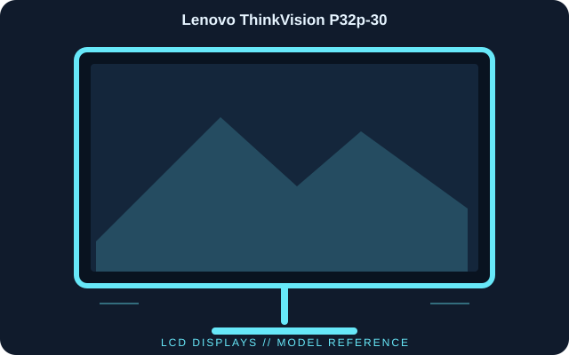

[ INDIVIDUAL COMPONENT // DISPLAYS ]
Lenovo ThinkVision P32p-30
A 31.5-inch UHD ThinkVision display intended for multi-device desk setups, with Thunderbolt 4, downstream connectivity and a built-in network port.

IDENTIFICATION: Lenovo ThinkVision P32p-30; 2023 generation. Verify the full model code, region and hardware revision on the unit label. Published specifications describe the identified configuration; its matching manual and label take precedence if revisions differ.
Published specifications
| Catalog subcategory | Lcd Displays |
|---|---|
| Exact model | Lenovo ThinkVision P32p-30 |
| Panel / native resolution | 31.5-inch IPS LCD, 3840 × 2160 (16:9) |
| Refresh rate / luminance | 60 Hz; 350 cd/m² typical |
| Contrast / color | 1000:1 typical; 99% sRGB and 95% DCI-P3 (manufacturer stated) |
| Video inputs | Thunderbolt 4, HDMI 2.0 and DisplayPort 1.4 |
| Dock ports | Thunderbolt 4 downstream, USB hub and RJ45 Ethernet |
| Host power | Up to 100 W via the Thunderbolt upstream connection, subject to configuration |
| Stand | Height, tilt, swivel and pivot adjustment; VESA mounting supported |
Compatibility & connectivity notes
The USB-C/Thunderbolt port carries video and data only when supported by the source; verify host Thunderbolt/DisplayPort Alt Mode, cable rating and power-delivery negotiation. 3840 × 2160 at 60 Hz is the native timing. KVM/network/hub behavior depends on the selected upstream host and Lenovo accessory/firmware configuration; confirm model-region specifications.
Preservation notes
Record the complete model suffix, serial/date code, input selection, source device, cable or adapter, tested timing and observed condition. Retain the matching regional manual and any calibration or service records with the display. Follow the manufacturer’s cleaning and service instructions; do not open CRT equipment without appropriate high-voltage training.
Manufacturer documentation & authoritative sources
- Lenovo — ThinkVision P32p-30 product specificationsManufacturer documentation and model-specific reference.
- Lenovo — PSREF model specificationsManufacturer documentation and model-specific reference.